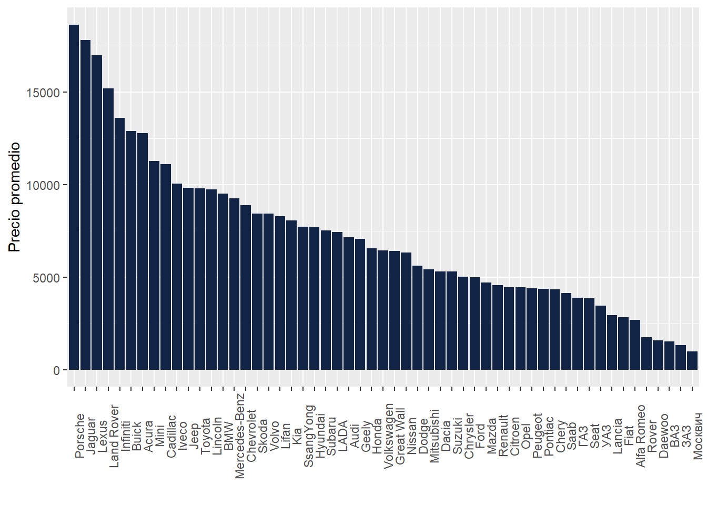
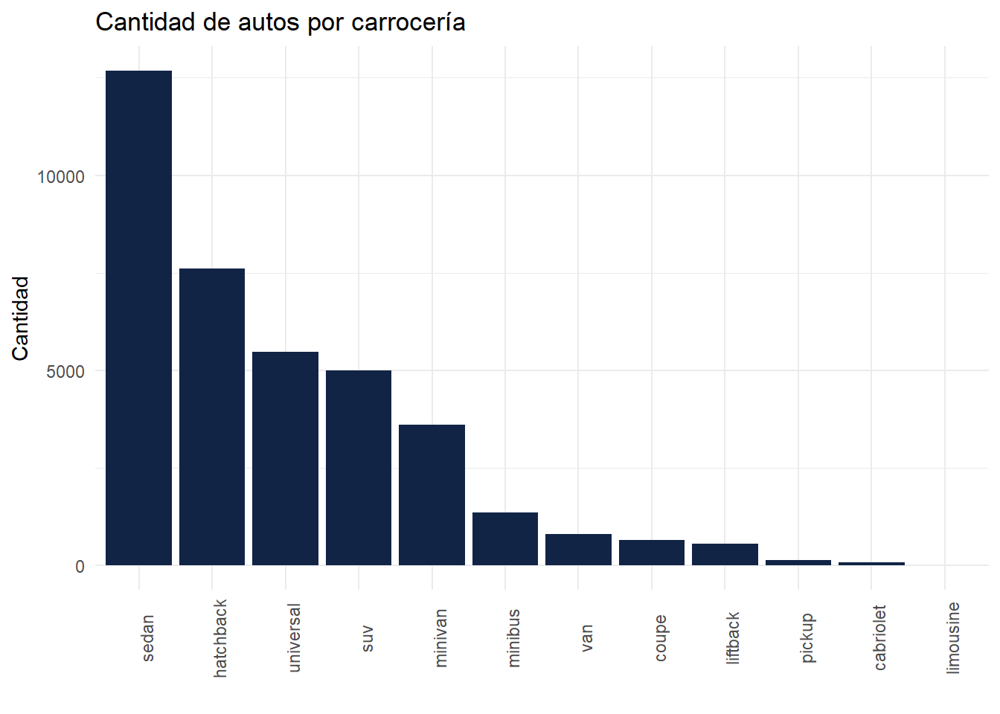
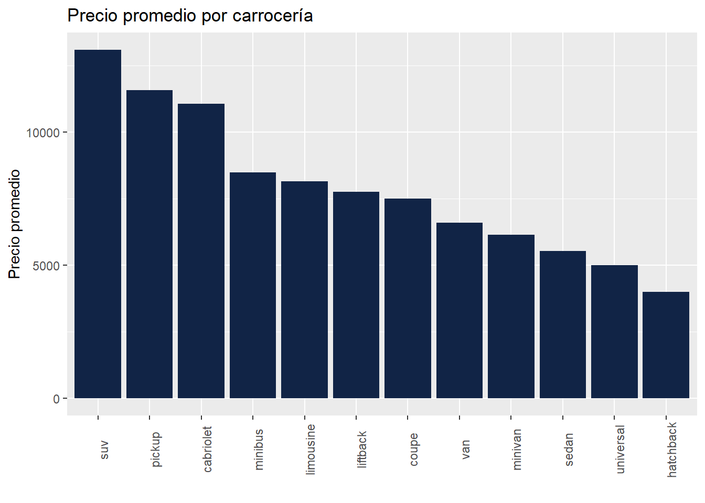

Cada día personas de casi todo el mundo piensan en vender su auto o comprar uno usado, sin tener mucho conocimiento en cuánto debiera ser el precio de este. Para poder saber cuál sería un “precio justo” o el “precio de mercado” que tiene un vehículo, se analizaron cerca de 38.000 datos de diferentes automóviles usados a la venta. Se concluyó que diversas características del auto son influyentes en su precio tales como su edad o la capacidad del motor.
Introducción
Muchas personas a la hora de comprar o vender un vehículo usado deben revisar diferentes opciones y hacerse una serie de preguntas para saber cuál se ajusta más a sus necesidades y capacidad de compra.
Para este proyecto se usaran datos provenientes de un catálogo de Bielorrusia tomados el 2 de Diciembre de 2019. Con ellos se intentará comprender cómo las características de un auto usado influyen en su precio. Al comprender cómo se relacionan las distintas variables con el precio del auto se podrían armar modelos que sirvan para estimar el precio de un auto en específico basado en su información.
Esto es útil tanto para personas que quieren vender como comprar un auto usado, ya que se pueden hacer una idea del valor que tiene en el mercado un vehículo en específico y así hacer una buena compra o venta donde el valor del vehículo sea adecuado al precio del mercado.
Datos
Los datos de los autos usados provienen de un catálogo de Bielorrusia y fueron tomados el 2 de Diciembre de 2019. Estos datos fueron obtenidos de la plataforma Kaggle (de aquí se descargaron). Se le hizo una limpieza a la base para simplificar el análisis. Se eliminaron los autos con datos faltantes y algunas variables que no se especificaba para que servían o que la información que entregaban era redundante y/o no era información relevante para el caso. La variable edad fue construida restando 2020 (muy cercano a cuándo fue tomada la base) con el año de producción del automóvil (la cuál fue retirada después ya que nos entregaba la misma información).
La base “limpia” contiene la información de 37.938 autos usados a la venta con 14 variables:
variable
tipo
descripción
marca
caracter
Marca del vehículo
modelo
caracter
Modelo del vehículo
transmision
caracter
Tipo de transmisión (automático o manual)
color
caracter
Color del vehículo
kilometraje
numérica
Kilometraje del vehículo
año_produccion
numérica
Año de producción del vehículo
tipo_motor
caracter
Tipo de motor (bencina o diesel)
capacidad_motor
numérica
Capacidad del motor
carroceria
caracter
Tipo de carroceríadel vehículo (SUV
traccion
caracter
Tipo de tracción del vehículo
precio_en_usd
numérica
Precio (en USD)
num_fotos
numérica
Número de fotos en el catálogo
dias_en_catalogo
numérica
Número de días en el catálogo
edad
numérica
Edad del auto (al año 2020)
Además se creó otra base con estos mismos datos pero quitando algunos ouliers.
Análisis exploratorio
Veamos entre que rangos de precio se distribuyen los vehículos en la Figura 1:
ggplot(datos_limpios, aes(x =reorder(marca, - precio_en_usd), y = precio_en_usd)) +geom_bar(stat ="summary", fun ="mean", fill ="#112446") +theme(axis.text.x =element_text(angle =90)) +xlab("") +ylab("Precio promedio")
Figura 4: Precio promedio por marca

Volskwagen es la marca con más anuncios por gran diferencia, además su precio promedio es bastante accesible en comparación con otros, encontrándose cercano a la mediana.
Por otro lado, no es sorpresa que para marcas consideradoas “de lujo” como Porsche o Jaguar el precio medio asciende considerablemente y la cantidad de anuncios es mucho menor.
También es interesante ver que carrocería (o tipo de auto) es más usado ( Figura 5 ) y su precio promedio ( Figura 6 )
código fuente
ggplot(datos_limpios) +aes(x =fct_infreq(carroceria)) +geom_bar(fill ="#112446") +theme_minimal() +ylab("Cantidad") +xlab("") +ggtitle("Cantidad de autos por carrocería") +theme(axis.text.x =element_text(angle =90))
Figura 5: Cantidad de autos por carrocería

código fuente
ggplot(datos_limpios, aes(x =reorder(carroceria, - precio_en_usd), y = precio_en_usd)) +geom_bar(stat ="summary", fun ="mean", fill ="#112446") +theme(axis.text.x =element_text(angle =90)) +xlab("") +ylab("Precio promedio") +ggtitle("Precio promedio por carrocería")
Figura 6: Precio promedio por carrocería

Por último, debemos ver cómo se relacionan las variables (solo las numéricas). Esto lo vemos con las correlaciones mostradas en la Figura 7, la cual es interactiva:
Notamos gran correlación entre el precio del auto y la edad de este, tiene sentido suponer que para autos más nuevos el precio será mayor. Además el precio esta correlacionado en menor medida con el kilometraje, la capacidad del motor y el número de fotos.
Metodología
Se realizarán dos regresiones, una con todos los datos y otra quitando los datos considerados como outliers. Luego compararemos que tan bien se ajusta el modelo para estos dos casos.
Sin outliers
Se hicieron distintos modelos de regresión (backward, forward, stepwise, etc.) con el criterio AIC y BIC. Para todos estos modelos los resultados fueron los mismos. A continuación se muestran los resultados para el modelo stepwise con criterio AIC ( Tabla 1 ) y para el modelo backward con criterio BIC ( Tabla 2 ).
back_bic <-step(modelo_full, direction ="backward", k =log(nrow(datos_limpios)), trace =0)tab_model(back_bic, file="output.html")
Tabla 2: Modelo backward con criterio BIC
precio en usd
Predictors
Estimates
CI
p
(Intercept)
8768.18
8601.73 – 8934.63
<0.001
kilometraje
-0.01
-0.01 – -0.01
<0.001
capacidad motor
2874.87
2817.90 – 2931.84
<0.001
num fotos
109.54
103.11 – 115.96
<0.001
dias en catalogo
1.53
1.19 – 1.87
<0.001
edad
-463.88
-469.42 – -458.33
<0.001
Observations
37938
R2 / R2 adjusted
0.617 / 0.617
Podemos ver, tal como dijimos antes, que los resultados son los mismos. Para todos los modelos tenemos que las variables: edad, capacidad del motor, kilometraje, número de fotos y días en el catálogo son significativas. Por otro lado, el valor del R-cuadrado ajustado es bastante bueno. Por lo que se podría aceptar el modelo.
Se analizo si existía multicolinealidad entre algunas variables a través del valor FIV para saber si era necesario sacar alguna de ellas. Estos valores los vemos en Tabla 3:
código fuente
kable(vif(modelo_full))
Tabla 3: Valores FIV
x
kilometraje
1.311184
capacidad_motor
1.035394
num_fotos
1.080926
dias_en_catalogo
1.007801
edad
1.353542
Al ser todos estos valores menores a 10 podemos decir que no hay problemas de colinealidad.
Outliers
A continuación, se sacarán los valores que puedan ser considerados como outliers. Debido a la gran cantidad de datos no fue posible hacer esto para toda la base. Por lo que se separaró los datos según carrocería, se eliminaron los valores extremos para cada grupo, y luego se junto todas estas bases sin outliers.
Entonces, para cada grupo debemos identificar estos puntos. Primero buscamos los puntos palanca, es decir, los que alteran mucho al modelo. Luego analizamos los residuos de la regresión y se eliminamos los outliers con mayor residuo.
A continuación se puede desplegar parte del código utilizado para quitar los outliers de la carrocería SUV.
código fuente
base_suv <- datos_limpios %>%filter(carroceria =="suv")base_suv <- base_suv %>% dplyr::select(-carroceria)modelo_nulo_suv <-lm(precio_en_usd ~1- marca - modelo - transmision - color - tipo_motor - traccion, data = base_suv)modelo_full_suv <-lm(precio_en_usd ~ . - marca - modelo - transmision - color - tipo_motor - traccion, data = base_suv)step_aic_suv <-step(modelo_nulo_suv, scope =formula(modelo_full_suv), direction ="both", k =2, trace =0)# PUNTOS PALANCA EN NUESTRA BDX <-model.matrix(modelo_full_suv)H <- X %*%solve(t(X) %*% X) %*%t(X)# Los h_ii son los elementos de la diagonalhii <-diag(H)# Ahora vemos cuales valores son mayoresa a 2p/n para denominarse puntos palancap <-length(modelo_full_suv$coefficients)n <-length(hii)pts_palanca <-which(hii >2* p / n)# Ahora vemos outliers con los residuos studentizadosalpha <-0.05# significanciat_alpha <-qt(1- alpha /2, n - p -1)# trabajaremos con unicamente los Residuos studentizados externamenteres_ext <-rstudent(step_aic_suv)Out <-which(abs(res_ext) > t_alpha)palanca_outliers <- pts_palanca[pts_palanca %in% Out]palanca_outliers <-unique(palanca_outliers, incomparables = F)base_suv1 <- base_suv[-palanca_outliers, ]
Cómo se explico anteriormente, se hizo esto para cada tipo de auto y luego se juntaron todas estas bases “libres” de outliers. Al juntar todo esto nos queda una base de datos con 3.698 observaciones, es decir, se identificaron y eliminaron 956 puntos considerados como outliers.
Con esta nueva base se generará otro modelo de regresión para compararlo con el que si contiene los outliers y ver cuál se ajusta mejor.
Los resultados para este modelo lo podemos ver en Tabla 4
Tabla 4: Modelo stepwise para bse sin outliers con criterio AIC
precio en usd
Predictors
Estimates
CI
p
(Intercept)
9301.29
9139.17 – 9463.41
<0.001
edad
-495.20
-500.77 – -489.63
<0.001
capacidad motor
2778.85
2723.18 – 2834.52
<0.001
num fotos
94.56
88.27 – 100.84
<0.001
kilometraje
-0.00
-0.00 – -0.00
<0.001
dias en catalogo
1.04
0.71 – 1.37
<0.001
Observations
36982
R2 / R2 adjusted
0.636 / 0.636
Vemos que, para este modelo tenemos las mismas variables significativas que en la Tabla 1 y las estimaciones son bastante similiares. Además notamos que el R-cuadrado ajustado mejora un poco, por lo que se podría pensar que este modelo ajusta un poco mejor los datos.
Conclusiones
Las características más importantes para predecir el valor de un auto usado son: la edad, la capacidad del motor, número de fotos del vehículo, el kilometraje y la cantidad de días que este lleva en el catálogo (o vendiéndose).
Podemos concluir que se pueden armar modelos mejores al eliminar ciertos datos que hacen mucho ruido o son muy anormales en la muestra, aunque la diferencia no es mucha y el trabajo es muy costoso, por lo que no vale la pena todo este proceso para tan poca ganancia.
Es posible que al eliminar outliers de otra manera, por ejemplo, separando según rangos de precio se hubiera llegado a un mejor modelo y de manera menos costosa. Otra opción pudo haber sido separar por rango de edad.
Aún asi el primer modelo es bastante bueno y podría predecir precios de autos usados con gran exactitud, ayudando a personas que quieran comprar un vehículo usado o venderlo.